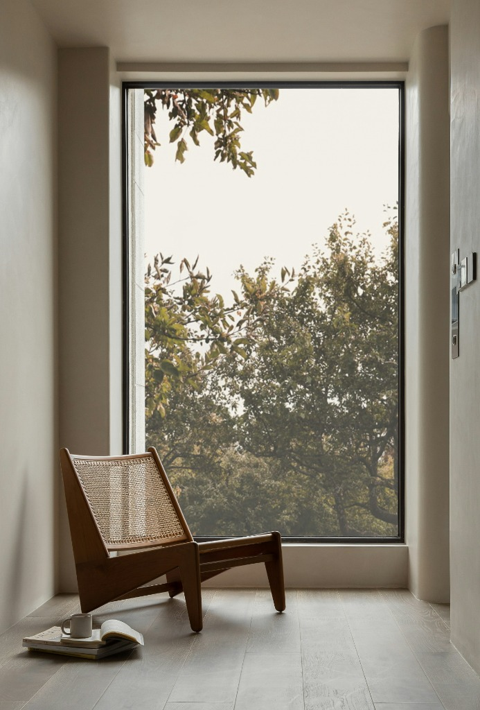

How We Work
From initial spatial concepts and detailed architectural blueprints to 3D rendering and master craftsmanship. We translate your lifestyle into a structured roadmap, turning abstract ideas into beautifully crafted, functional sanctuaries.
A Narrative of Form & Function

From initial spatial concepts and detailed architectural blueprints to 3D rendering and master craftsmanship. We translate your lifestyle into a structured roadmap, turning abstract ideas into beautifully crafted, functional sanctuaries.

We layer organic wood grains against muted stone surfaces. The warmth of natural timber meets the composure of matte finishes, crafting a silent dialogue between materials.

True comfort is designed in millimeters. By structuring clear, fluid pathways, the kitchen layout respects your natural movements and elevates cooking to an art form.

Luxury is found in what you do not see. Seamless cabinet doors conceal everyday clutter, keeping the surfaces quiet, spacious, and inviting.

As daylight fades, warm ambient illumination traces the edges of the room. Perimeter lighting transforms simple walls into a soft, calming sanctuary.

Precision, style, and structure come together in final alignment. A balanced kitchen crafted down to the finest detail, ready to hold a lifetime of memories.